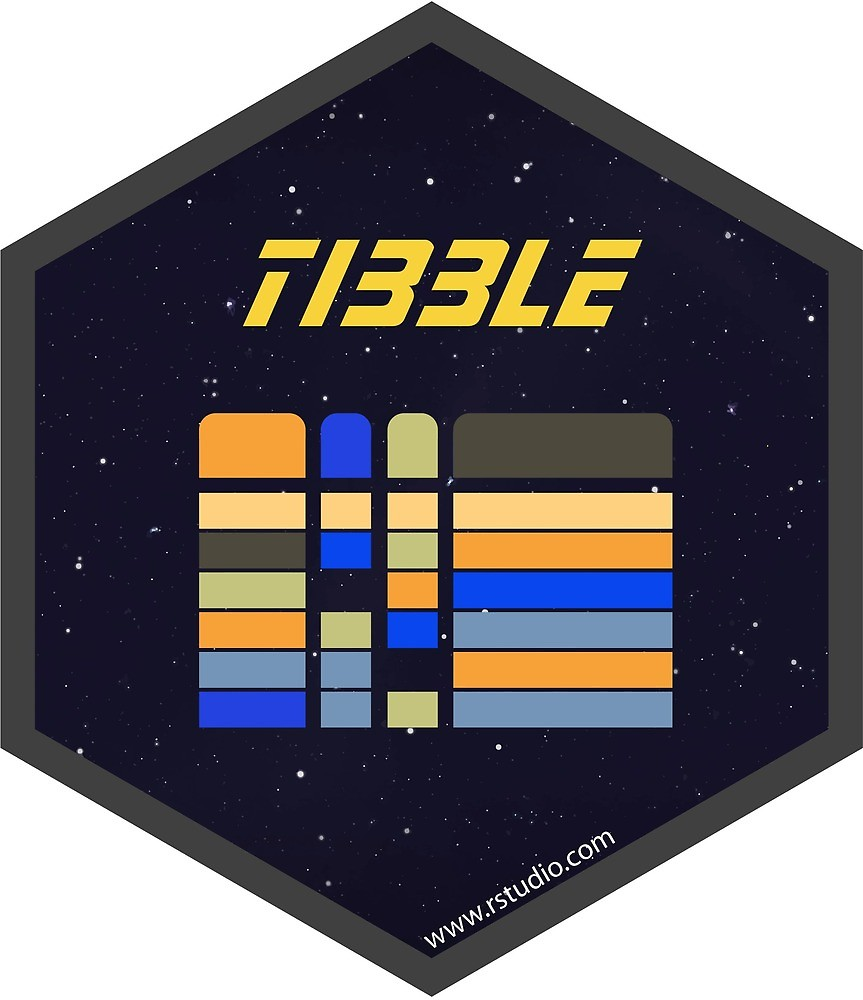
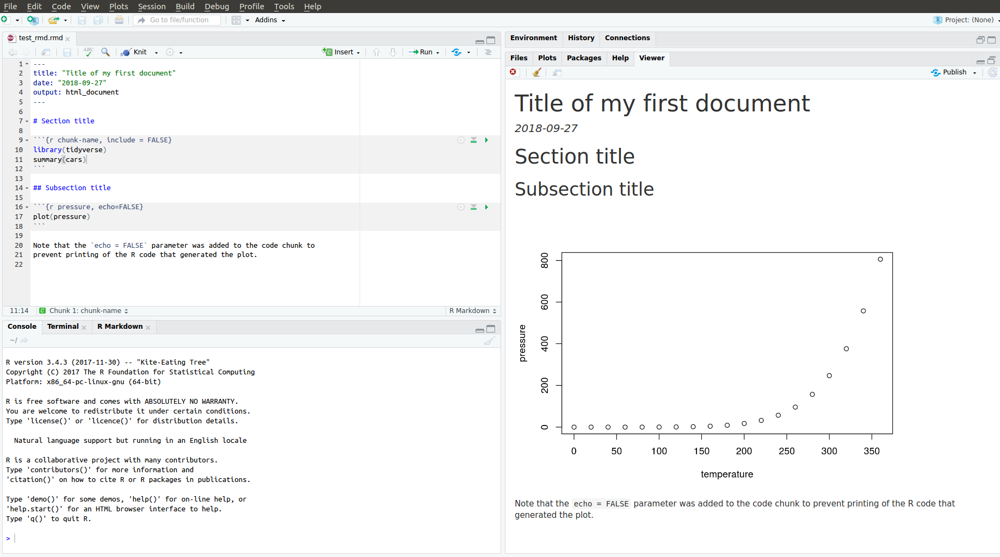

Lecture 2: Communicating and Programming in R
CME/STATS 195
Lan Huong Nguyen
October 2, 2018
Contents
Data science workflow
Communicating with R Markdown
Programming
Style
Control flow statements
- Functions


Data Science
Data Science Workflow
Data science is an exciting discipline that allows you to turn raw data into understanding, insight, and knowledge. 1
- Import
- Wrangle (tidy & transform)
- Visualize
- Model
- Communicate
tidyverse
The
tidyverseis an opinionated collection of R packages designed for data science. All packages share an underlying design philosophy, grammar, and data structures. 2
tidyverse includes packages for importing, wrangling, exploring and modeling data.
The system is intended to make data scientists more productive. To use tidyverse do the following:
# Install the package
install.packages("tidyverse")
# Load it into memory
library("tidyverse")

The tibble package
The tibble package is part of the core tidyverse.
Tibbles are a modern take on data frames. They keep the features that have stood the test of time, and drop the features that used to be convenient but are now frustrating.

tibbles are data frames, tweaked to make life a little easier. Unlike regular data.frames they:
- never change the type of the inputs (e.g. do not convert strings to factors!)
- never changes the names of variables
- never creates row.names()
- only recycles inputs of length 1
Using tibbles
To use functions from tibble and other tidyverse packages:
# load it into memory
library(tidyverse)Printing tibble is much nicer, and always fits into your window:
# e.g. a built-in dataset 'diamonds' is a tibble:
class(diamonds)## [1] "tbl_df" "tbl" "data.frame"diamonds## # A tibble: 53,940 x 10
## carat cut color clarity depth table price x y z
## <dbl> <ord> <ord> <ord> <dbl> <dbl> <int> <dbl> <dbl> <dbl>
## 1 0.23 Ideal E SI2 61.5 55 326 3.95 3.98 2.43
## 2 0.21 Premium E SI1 59.8 61 326 3.89 3.84 2.31
## 3 0.23 Good E VS1 56.9 65 327 4.05 4.07 2.31
## 4 0.290 Premium I VS2 62.4 58 334 4.2 4.23 2.63
## 5 0.31 Good J SI2 63.3 58 335 4.34 4.35 2.75
## 6 0.24 Very Good J VVS2 62.8 57 336 3.94 3.96 2.48
## 7 0.24 Very Good I VVS1 62.3 57 336 3.95 3.98 2.47
## 8 0.26 Very Good H SI1 61.9 55 337 4.07 4.11 2.53
## 9 0.22 Fair E VS2 65.1 61 337 3.87 3.78 2.49
## 10 0.23 Very Good H VS1 59.4 61 338 4 4.05 2.39
## # … with 53,930 more rowsUsing tibbles
Creating tibbles is similar to data.frames, but no strict rules on column names:
(tb <- tibble(x = 1:5, y = 1,z = x ^ 2 + y, `:)` = "smile"))## # A tibble: 5 x 4
## x y z `:)`
## <int> <dbl> <dbl> <chr>
## 1 1 1 2 smile
## 2 2 1 5 smile
## 3 3 1 10 smile
## 4 4 1 17 smile
## 5 5 1 26 smileSubsetting tibbles is stricter than subsetting data.frames, and ALWAYS returns objects with expected class: a single [ returns a tibble, a double[[ returns a vector.
class(diamonds$carat)## [1] "numeric"class(diamonds[["carat"]])## [1] "numeric"class(diamonds[, "carat"])## [1] "tbl_df" "tbl" "data.frame"More on tibbles
You can read more about other tibble features by calling on your R console:
vignette("tibble")Communicating with R Markdown
R Markdown
R Markdown provides an unified authoring framework for data science, combining your code, its results, and your prose commentary.

R Markdown was designed to be used:
for communicating your conclusions with people who do not want to focus on the code behind the analysis.
for collaborating with other data scientists, interested in both conclusions, and the code.
as a modern day lab notebook for data science, where you can capture both your work and your thought process.
R Markdown sourse files
R Markdown files are a plain text files with “.Rmd” extension.
---
title: "Title of my first document"
date: "2018-09-27"
output: html_document
---
# Section title
```{r chunk-name, include = FALSE}
library(tidyverse)
summary(cars)
```
## Subsection title
```{r pressure, echo=FALSE}
plot(pressure)
```
Note that the `echo = FALSE` parameter was added to the code chunk to
prevent printing of the R code that generated the plot.
The documents must contain YAML header marked with dashes. You can ass both code chunks and plain text. Sections and subsections are marked with hashtags.
Compiling R Markdown files
To produce a complete report containing all text, code, and results:
In RStudio, click on “Knit” or press
Cmd/Ctrl+Shift + K.From the R command line, type rmarkdown::render(“filename.Rmd”)
This will display the report in the viewer pane, and create a self-contained HTML file that you can share with others.
After compiling the R Markdown document from the previous slide, you get this html.
Viewing the report in RStudio

YAML header
A YAML header is a set of key: value pairs at the start of your file. Begin and end the header with a line of three dashes (- - -), e.g.
---
title: "Untitled"
author: "Anonymous"
output: html_document
---You can tell R Markdown what type of document you want to render: html_document (default), pdf_document, word_document, beamer_presentation etc.
You can print a table of contents (toc) with the following:
---
title: "Untitled"
author: "Anonymous"
output:
html_document:
toc: true
---Text in R Markdown
In “.Rmd” files, prose is written in Markdown, a lightweight markup language with plain text files formating syntax.
Section headers/titles:
# 1st Level Header
## 2nd Level Header
### 3rd Level HeaderText formatting:
*italic* or _italic_
**bold** __bold__
`code`
superscript^2^ and subscript~2~Text in R Markdown
Lists:
* unordered list
* item 2
+ sub-item 1
+ sub-item 2
1. ordered list
1. item 2. The numbers are incremented automatically in the output.Links and images:
<http://example.com>
[linked phrase](http://example.com)
Text in R Markdown
Tables:
Table Header | Second Header
-------------| -------------
Cell 1 | Cell 2
Cell 3 | Cell 4
Math formulae
$\alpha$ is the first letter of the Greek alphabet.
Using $$ prints a centered equation in the new line.
$$\sqrt{\alpha^2 + \beta^2} = \frac{\gamma}{2}$$Code chunks
In R Markdown R code must go inside code chunks, e.g.:
```{r chunk-name}
x <- runif(10)
y <- 10 * x + 4
plot(x, y)
```Keyboard shortcuts:
Insert a new code chunk:
Ctrl/Cmd + Alt + IRun current chunk:
Ctrl/Cmd + Shift + EnterRun current line (where the cursor is):
Ctrl/Cmd + Enter
Chunk Options:
Chunk output can be customized with options supplied to chunk header. Some non-default options are:
eval = FALSE: prevents code from being evaluatedinclude = FALSE: runs the code, but hides code and its output in the final documentecho = FALSE: hides the code, but not the results, in the final documentmessage = FALSE: hides messageswarning = FALSE: hides warningsresults = ‘hide’: hides printed outputfig.show = ‘hide’: hides plotserror = TRUE: does not stop rendering if error occurs
Inline code
You can evealuate R code in a middle of your text:
There are 26 in the alphabet, and 12 months in each year.
Today, there are `as.Date("2019-08-23") - Sys.Date()` days left till my next birthday.There are 26 in the alphabet, and 12 months in a year. Today, there are 325 days left till my next birthday.
More on R Markdown
R Markdown is relatively young, and growing rapidly.
Official R Markdown website: (http://rmarkdown.rstudio.com)
Further reading and references:
Some R Markdown advice
- See your future self as a collaborator.
- Ensure each notebook has a descriptive title and name.
- Use the header date to record start time
- Keep track of failed attempts
- If you discover an error in a data file, write code to fix it.
- Regularly knit the notebook
- Use random seeds before sampling.
- Keep track the versions of the packages you use, e.g. by including
sessionInfo()command at the end of your document.
All the above will help you increase the reproduciblity of your work.
Programming: style guide
Naming conventions
The first step of programming is naming things.
In the “Hadley Wickam” R style convention:
File names are meaningful. Script files end with “.R”, and R Markdown with “.Rmd”
# Good
fit-models.R
utility-functions.R# Bad (works but does not follow style convention)
foo.r
stuff.rVariable and function names are lowercase.
# Good
day_one
day_1# Bad (works but does not follow style convention)
first_day_of_the_month
DayOneSpacing
Spacing around all infix operators (=, +, -, <-, etc.):
average <- mean(feet / 12 + inches, na.rm = TRUE) # Good
average<-mean(feet/12+inches,na.rm=TRUE) # BadSpacing before left parentheses, except in a function call
# Good
if (debug) do(x)
plot(x, y)
# Bad
if(debug)do(x)
plot (x, y)# Good
x <- 1 + 2# Bad (works but does not follow style convention)
x = 1 + 2Curly braces
- An opening curly brace “
{” should not go on its own line and be followed by a new line. - A closing curly “
}” brace can go on its own line. - Indent the code inside curly braces.
- It’s ok to leave very short statements on the same line
# Good
if (y < 0 && debug) {
message("Y is negative")
}
if (y == 0) {
log(x)
} else {
y ^ x
}
# Bad
if (y < 0 && debug)
message("Y is negative")
if (y == 0) {
log(x)
}
else {
y ^ x
}if (y < 0 && debug) message("Y is negative")Programming: control flow
Booleans/logicals
Booleans are logical data types (TRUE/FALSE) associated with conditional statements, which allow different actions and change control flow.
# equal "==""
5 == 5## [1] TRUE# not equal: "!=""
5 != 5 ## [1] FALSE# greater than: ">""
5 > 4 ## [1] TRUE# greater than or equal: ">="" (# similarly < and <=)
5 >= 5## [1] TRUE# You can combine multiple boolean expressions
TRUE & TRUE## [1] TRUETRUE & FALSE ## [1] FALSETRUE | FALSE## [1] TRUE!(TRUE)## [1] FALSEBooleans/logicals
In R if you combine 2 vectors of booleans, by each element then use &. Rember the recycling property for vectors.
c(TRUE, TRUE) & c(FALSE, TRUE)## [1] FALSE TRUEc(5 < 4, 7 == 0, 1< 2) | c(5==5, 6> 2, !FALSE)## [1] TRUE TRUE TRUEc(TRUE, TRUE) & c(TRUE, FALSE, TRUE, FALSE) # recycling## [1] TRUE FALSE TRUE FALSEBooleans/logicals
If we use double operators && or || is used only the first elements are compared:
c(TRUE, TRUE) && c(FALSE, TRUE)## [1] FALSEc(5 < 4, 7 == 0, 1< 2) || c(5==5, 6> 2, !FALSE)## [1] TRUEc(TRUE, TRUE) && c(TRUE, FALSE, TRUE, FALSE)## [1] TRUEBooleans/logicals
- Another possibility to combine booleans is to use
all()orany()functions:
all(c(TRUE, FALSE, TRUE))## [1] FALSEany(c(TRUE, FALSE, TRUE))## [1] TRUEall(c(5 > -1, 3 >= 1, 1 < 1))## [1] FALSEany(c(5 > -1, 3 >= 1, 1 < 1))## [1] TRUEControl statements
Control flow is the order in which individual statements, instructions or function calls of a program are evaluated.
Control statements allow you to do more complicated tasks.
- Their execution results in a choice between which of two or more paths should be followed.
If/elseForWhile
If statements
Decide on whether a block of code should be executed based on the associated boolean expression.
Syntax. The if statements are followed by a boolean expression wrapped in parenthesis. The conditional block of code is inside curly braces
{}.
if (traffic_light == "green") {
print("Go.")
}- ‘if-else’ statements let you introduce more options
if (traffic_light == "green") {
print("Go.")
} else {
print("Stay.")
}- You can also use
else if()
if (traffic_light == "green") {
print("Go.")
} else if (traffic_light == "yellow") {
print("Get ready.")
} else {
print("Stay.")
}Switch statements
For very long sequence of if statements, use the switch() function
operator <- function(x, y, op) {
switch(as.character(op),
'+' = x + y,
'-' = x - y,
'*' = x * y,
'/' = x / y,
stop("Unknown op!")
)
}operator(2, 7, '+')## [1] 9operator(2, 7, '-')## [1] -5operator(2, 7, '/')## [1] 0.2857143operator(2, 7, "a")## Error in operator(2, 7, "a"): Unknown op!For loops
- A for loop is a statement which repeats the execution a block of code a given number of iterations.
for (i in 1:5){
print(i^2)
}## [1] 1
## [1] 4
## [1] 9
## [1] 16
## [1] 25While loops
- Similar to for loops, but repeat the execution as long as the boolean condition supplied is TRUE.
i = 1
while(i <= 5) {
cat("i =", i, "\n")
i = i + 1
}## i = 1
## i = 2
## i = 3
## i = 4
## i = 5Next
nexthalts the processing of the current iteration and advances the looping index.
for (i in 1:10) {
if (i <= 5) {
print("skip")
next
}
cat(i, "is greater than 5.\n")
}## [1] "skip"
## [1] "skip"
## [1] "skip"
## [1] "skip"
## [1] "skip"
## 6 is greater than 5.
## 7 is greater than 5.
## 8 is greater than 5.
## 9 is greater than 5.
## 10 is greater than 5.nextapplies only to the innermost of nested loops.
for (i in 1:3) {
cat("Outer-loop i: ", i, ".\n")
for (j in 1:4) {
if(j > i) {
print("skip")
next
}
cat("Inner-loop j:", j, ".\n")
}
}## Outer-loop i: 1 .
## Inner-loop j: 1 .
## [1] "skip"
## [1] "skip"
## [1] "skip"
## Outer-loop i: 2 .
## Inner-loop j: 1 .
## Inner-loop j: 2 .
## [1] "skip"
## [1] "skip"
## Outer-loop i: 3 .
## Inner-loop j: 1 .
## Inner-loop j: 2 .
## Inner-loop j: 3 .
## [1] "skip"Break
- The
breakstatement allows us to break out out of a for, while loop (of the smallest enclosing). - The control is transferred to the first statement outside the inner-most loop.
for (i in 1:10) {
if (i == 6) {
print(paste("Coming out from for loop Where i = ", i))
break
}
print(paste("i is now: ", i))
}## [1] "i is now: 1"
## [1] "i is now: 2"
## [1] "i is now: 3"
## [1] "i is now: 4"
## [1] "i is now: 5"
## [1] "Coming out from for loop Where i = 6"Exercise 1
Go to “Lec2_Exercises.Rmd” in RStudio.
Do Exercise 1.
Programming: functions
What is a function in R?
A function is a procedure/routine that performs a specific task.
Functions are used to abstract components of larger program.
Similarly to mathematical functions, they take some input and then do something to find the result.
Functions allow you to automate common tasks in a more powerful and general way than copy-and-pasting.
If you’ve copied and pasted a block of code more than twice, you should use a function instead.
Why should you use functions?
Functions become very useful as soon as your code becomes long enough.
- Functions will make your code easier to understand.
- Errors are less likely to occure and easier to fix.
- For repeated taskes, changes can be made once by editing a function and not many distant chunks of code. Example:
set.seed(1)
a <- rnorm(10); b <- rnorm(10); c <- rnorm(10); d <- rnorm(10)
# Bad
a <- (a - min(a, na.rm = TRUE)) /
(max(a, na.rm = TRUE) - min(a, na.rm = TRUE))
b <- (b - min(b, na.rm = TRUE)) /
(max(b, na.rm = TRUE) - min(b, na.rm = TRUE))
c <- (c - min(c, na.rm = TRUE)) /
(max(b, na.rm = TRUE) - min(c, na.rm = TRUE))
d <- (d - min(d, na.rm = TRUE)) /
(max(d, na.rm = TRUE) - min(d, na.rm = TRUE))# Good
rescale_data <- function(x) {
rng <- range(x, na.rm = TRUE)
return((x - rng[1]) / (rng[2] - rng[1]))
}
a <- rescale_data(a)
b <- rescale_data(b)
c <- rescale_data(c)
d <- rescale_data(d)Function Definition
To define a function you assign a variable name to a
functionobject.Functions take arguments, mandatory and optional.
Provide the brief description of your function in comments before the function definition.
# Computes mean and standard deviation of a vector,
# and optionally prints the results.
summarize_data <- function(x, print=FALSE) {
center <- mean(x)
spread <- sd(x)
if (print) {
cat("Mean =", center, "\n",
"SD =", spread, "\n")
}
list(mean=center, sd=spread)
}Calling functions
# without printing
x <- rnorm(n = 500, mean = 4, sd = 1)
y <- summarize_data(x)# with printing
y <- summarize_data(x, print = TRUE)## Mean = 4.009679
## SD = 1.01561# Results are stored in list "y"
y$mean## [1] 4.009679y$sd## [1] 1.01561# The order of arguments does not matter if the names are specified
y <- summarize_data(print=FALSE, x = x)Explicit return statements
The value returned by the function is usually the last statement it evaluates. You can choose to return early by using return(); this makes you code easier to read.
# Complicated function simplified by the use of early return statements
complicated_function <- function(x, y, z) {
# Check some condition
if (length(x) == 0 || length(y) == 0) {
return(0)
}
# Complicated code here
}Returning invisible objects can be done with invisible()
show_missings <- function(df) {
cat("Missing values:", sum(is.na(df)), "\n")
invisible(df) # this result doesn’t get printed out
}show_missings(mtcars)## Missing values: 0dim(show_missings(mtcars))## Missing values: 0## [1] 32 11Environment
The environment of a function controls how R finds an object associated with a name.
f <- function(x) {
x + y
}R uses rules called lexical scoping to find the value associated with a name. Here, R will look for y in the environment where the function was defined
y <- 100
f(10)## [1] 110This behaviour attracts bugs. You should try to avoid using global variables.
apply, lapply, sapply functions
The
applyfamily functions, are functions which manipulate slices of data stored as matrices, arrays, lists and data-frames in a repetitive way.These functions avoid the explicit use of loops, and might be more computationally efficient, depending on how big a dataset is. For more details on runtimes see this link.
applyallow you to perform operations with very few lines of code.The family comprises: apply, lapply , sapply, vapply, mapply, rapply, and tapply. The difference lies in the structure of input data and the desired format of the output).
apply function
apply operates on arrays/matrices.
In the example below we obtain column sums of matrix X.
(X <- matrix(sample(30), nrow = 5, ncol = 6))## [,1] [,2] [,3] [,4] [,5] [,6]
## [1,] 11 21 10 16 7 15
## [2,] 30 13 14 27 23 2
## [3,] 18 3 5 8 4 28
## [4,] 1 20 6 24 26 25
## [5,] 19 9 12 29 22 17apply(X, MARGIN = 2 , FUN = sum)## [1] 79 66 47 104 82 87Note: that in a matrix MARGIN = 1 indicates rows and MARGIN = 2 indicates columns.
apply function
applycan be used with user-defined functions:
# number entries < 15
apply(X, 2, function(x) 10*x + 2) ## [,1] [,2] [,3] [,4] [,5] [,6]
## [1,] 112 212 102 162 72 152
## [2,] 302 132 142 272 232 22
## [3,] 182 32 52 82 42 282
## [4,] 12 202 62 242 262 252
## [5,] 192 92 122 292 222 172- a function can be defined outside
apply(),
logColMeans <- function(x, eps = NULL) {
if (!is.null(eps)) x <- x + eps
return(mean(x))
}
apply(X, 2, logColMeans) ## [1] 15.8 13.2 9.4 20.8 16.4 17.4apply(X, 2, logColMeans, eps = 0.1) ## [1] 15.9 13.3 9.5 20.9 16.5 17.5lapply/sapply functions
lapply()is used to repeatedly apply a function to elements of a sequential object such as a vector, list, or data-frame (applies to columns).The output is a list with the same number of elements as the input object.
# lapply returns a list
lapply(1:3, function(x) x^2)## [[1]]
## [1] 1
##
## [[2]]
## [1] 4
##
## [[3]]
## [1] 9sapplyis the same aslapplybut returns a “simplified” output.
sapply(1:3, function(x) x^2)## [1] 1 4 9- like with
apply(), user-defined functions can be used withsapply/lapply.
Functional Programming
The idea of passing a function to another function is extremely powerful idea, and it’s one of the behaviours that makes R a functional programming (FP) language.
The apply family of functions in base R are basically tools to extract out this duplicated code, so each common for loop pattern gets its own function.
The package purrr in tidyverse framework solves similar problems, more in line with the ‘tidyverse-philosophy’. We will learn in in following lectures.
Exercise 2 and 3
Go back to “Lec2_Exercises.Rmd” in RStudio.
Do Exercise 2 and 3.
Comments and documentation
Comment your code!
Comments are not subtitles, i.e. don’t repeat the code in the comments.
Use dashes to separate blocks of code: